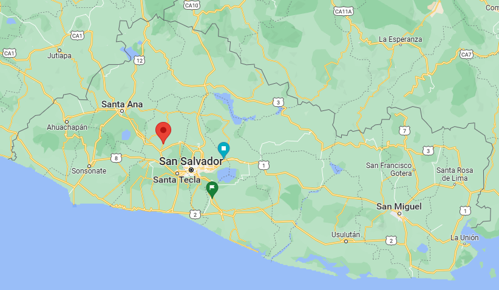

Alrededor del año 250 las grandes partes de la zona central y oeste de El Salvador fue soterrada bajo densas capas de ceniza provenientes del volcán Ilopango. El área fue abandonada y la evolución cultural del período preclásico tardío maya fue interrumpida por muchos siglos hasta que la ceniza se convirtió en suelo fértil.
El Parque Arqueológico Joya de Cerén resguarda la memoria de un poblado prehispánico con un carácter excepcional.
Las casas de los pobladores de Joya de Céren están formadas por 3 estructuras separadas: los dormitorios, la cocina (en donde se han desenterrado cuchillas, piedras de moler, vasijas con restos de comida (frijoles, cacao y chiles), platos de barro, lanzas, entre otros) y la bodega; y pueden tener una cuarta estructura (ya sea: taller, temazcal, etc). Las casas tenían sus terrenos de cultivo y en algunos casos estaban limitadas por un cerco de madera.

Ver mapa
Ver otro